Overview
An SMS Package is a single file which, when used with the SMS agent, can be used to remotely manage scanners by programming parameters and updating firmware. 123Scan is used to generate an SMS Package.
An SMS Package can be programmed to support up to five (5) unique scanners models/plug-ins.
For example:
| Model/Plug-in #1 | DS6878 SR (Standard Range) |
| Model/Plug-in #2 | DS6878 HC (Health Care) |
| Model/Plug-in #3 | DS4208 SR |
| Model/Plug-in #4 | LS4208 SR |
| Model/Plug-in #5 | DS9808 SR |
An SMS Package is comprised of three components:
| Component #1 | 123Scan configuration file containing parameters. |
| Component #2 | 123Scan plug-in file containing the scanner's firmware. |
| Component #3 | A single Load Directive File (LDF) containing the rule set including details such as trigger events, programming date and logging settings. |
Once the SMS Package is placed on the target PC, if the SMS agent is in its default state - Run as a Service, it will review the SMS Package's content and automatically program the scanner as described in the SMS Package.
Creating a SMS Package
Steps to Create the SMS Package
123Scan v5.0 (or newer) can be used to create an SMS Package. 123Scan utilizes a wizard to guide users through the SMS Package generation process.
- Launch the 123Scan utility.
-
In the Start tab, click the Actions drop-down menu and select Create Scanner Management Service (SMS) Package.
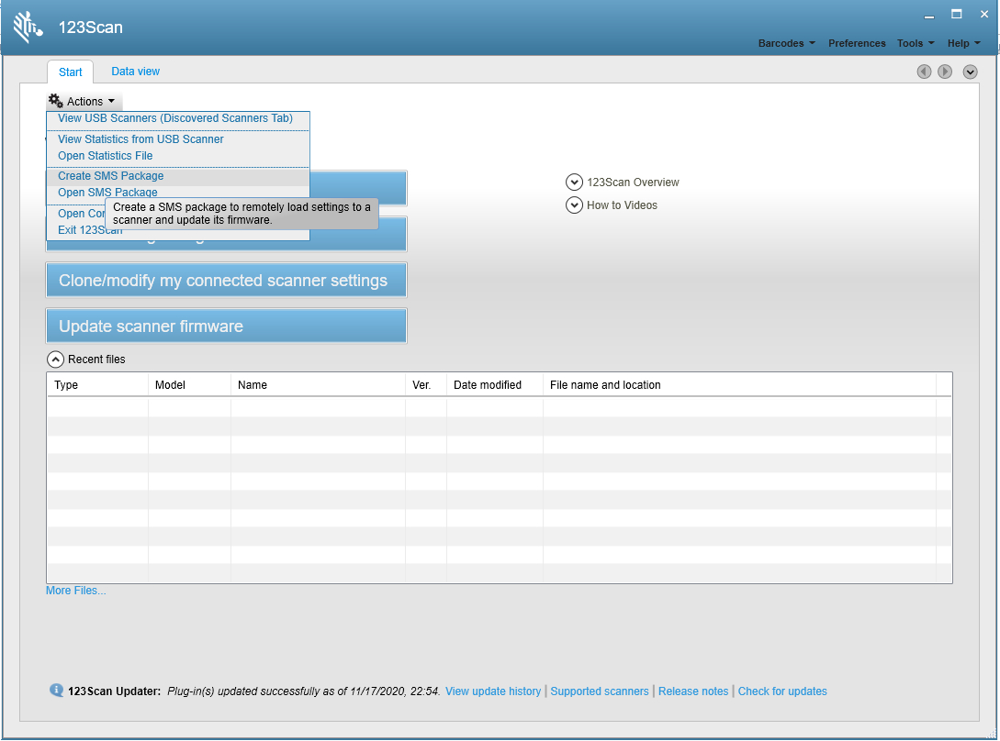Figure 1: Start Tab - Create Scanner Management Service (SMS) Package -
In the SMS Package name and notes window, enter an SMS Package name, and anyPackage notes you may want to add to describe the package. Click Next.
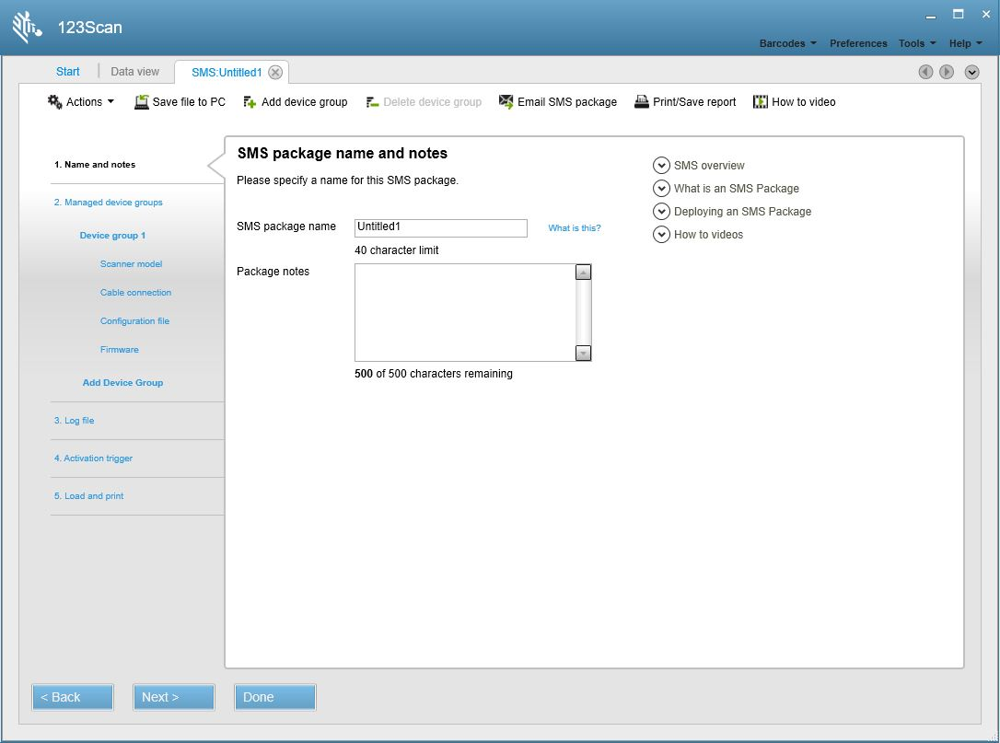Figure 2: SMS Untitled1 Tab - SMS package name and notes Window -
In the Select your scanner family from the options below window, select the family of scanners that you want to configure. Click Next.
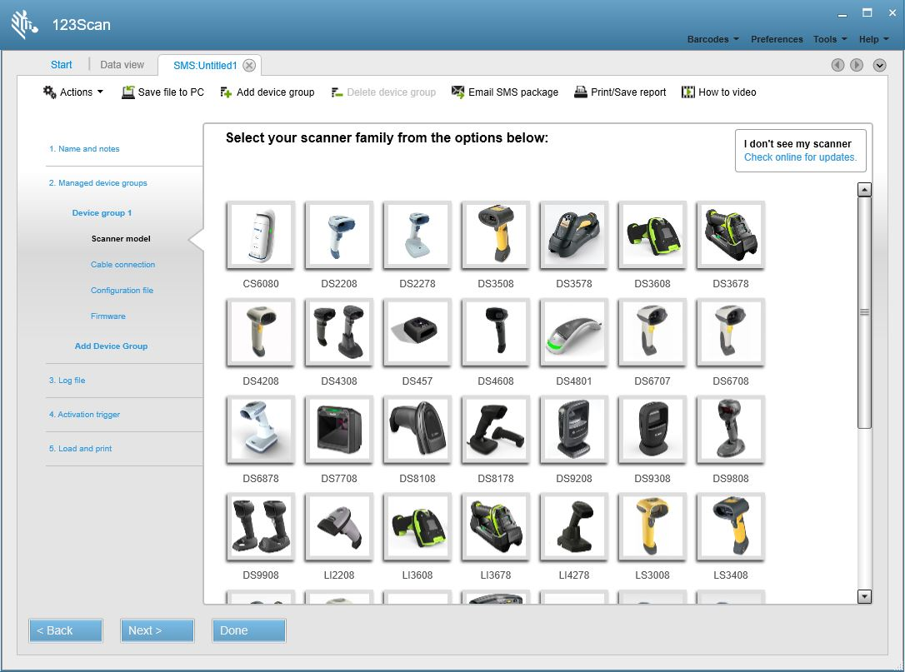Figure 3: SMS Untitled1 Tab - Select your scanner family Window -
In the Select your scanner model from the options below window, click the scanner model you want to configure. Click Next.
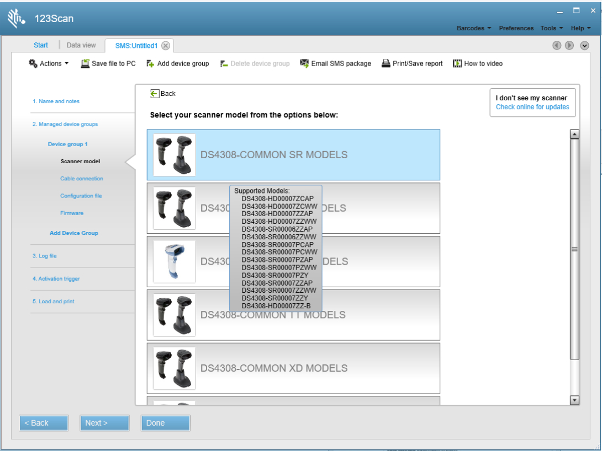Figure 4: SMS Untitled1 Tab - Select your scanner model Window -
In the Supported scanner models window, click Next > if your scanner model is in the list of supported scanners.
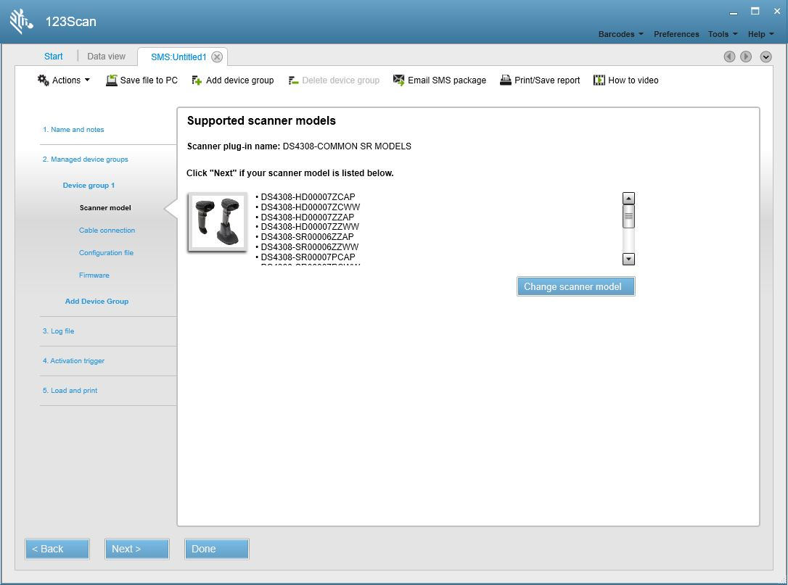Figure 5: SMS Untitled1 Tab - Supported scanner models WindowIMPORTANT If your scanner model is not in the list, click Change scanner model to return to the Select your scanner family window (Figure 3) and choose another scanner family.
-
In the Cable connection window, click the Management Communication Protocol drop-down arrow to select the communication method you want to use to manage your device.
This protocol is the communication mode used by SMS to manage your scanner. The fastest supported management communication protocol (programming mode) is shown at the top of the list by default. Note that this management protocol can be different than the communication protocol used by the device during normal operations such as scanning and transmitting data to the host application.
The SMS for Windows supports the following communication protocols.
- USB SNAPI
- USB OPOS (IBM Hand-held USB with Full Scan Disable)
For example, the management communication protocol for a DS9808 scanner could be SNAPI while the scanning communication protocol could be OPOS.
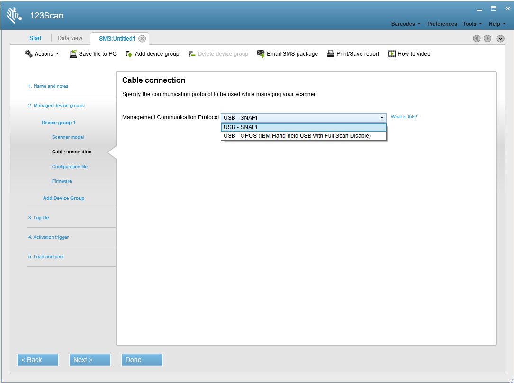Figure 6: SMS Untitled1 Tab - Cable connection Window -
In the Load parameters to your scanner window, you may check the Load parameters to scanner box if you have a configuration file containing attributes that you want to load onto the scanner. This option requires that you have already created an appropriate configuration file for your scanner using the 123Scan utility. After checking the box, click the Browse for file and select the configuration file you want to load onto the scanner. Click Next.
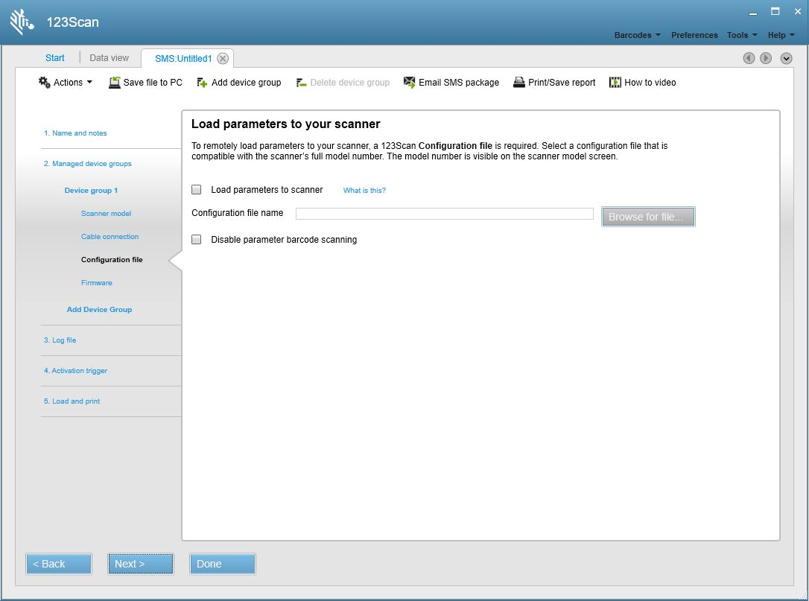Figure 7: SMS Untitled1 Tab - Load parameters to your scanner Window -
In the Load firmware to your scanner window, you may check the Update scanner firmware box to load updated firmware on the scanner. When you check the box, the available versions of firmware actively display. The most recent firmware is recommended and selected by default but previous versions may be chosen, if necessary. Click Next.
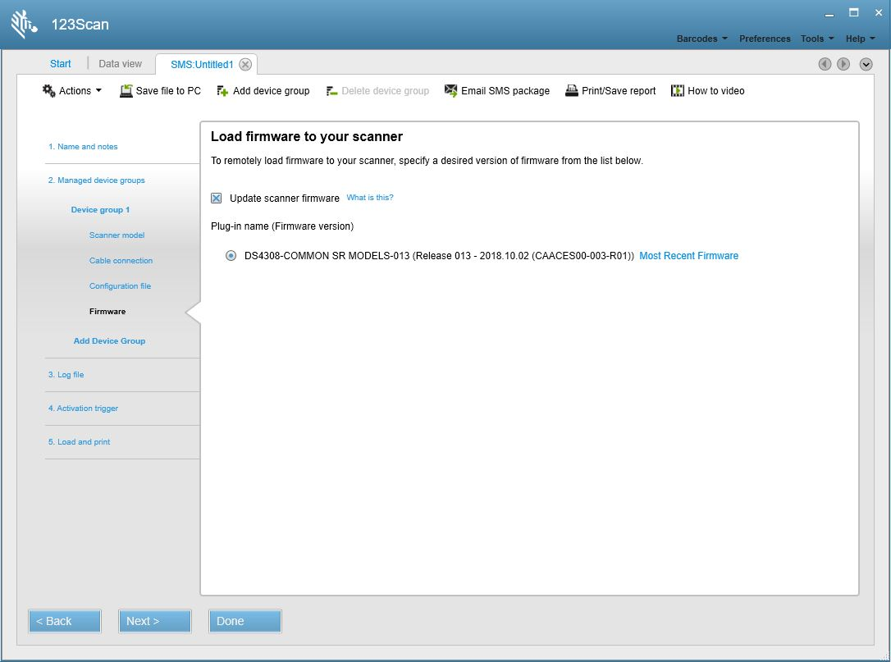Figure 8: SMS Untitled1 Tab - Load firmware to your scanner Window -
On the Add another device group window, you may configure additional device groups (up to a total of five) within the SMS Package. If applicable, click Add Device Group and repeat Step 4 through Step 9. When all device groups are added within the SMS Package, click Next.
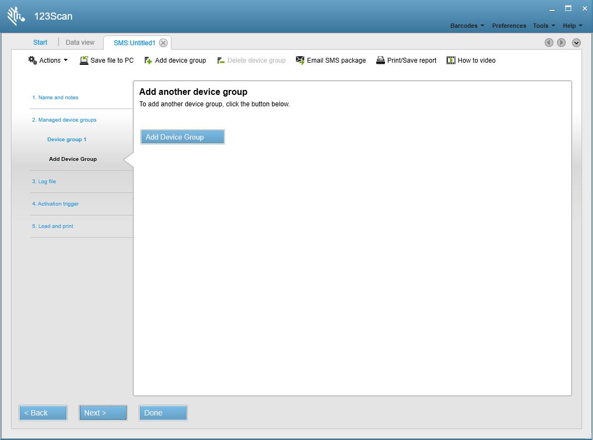Figure 9: SMS Untitled1 Tab - Add another device group Window -
In Track events with a log file window, you may select the mode for logging SMS events.
NOTE The information that follows includes log file field descriptions and sample log files. To continue with the next step in the SMS Package Generator. Click Next on the window above to continue with the generator.
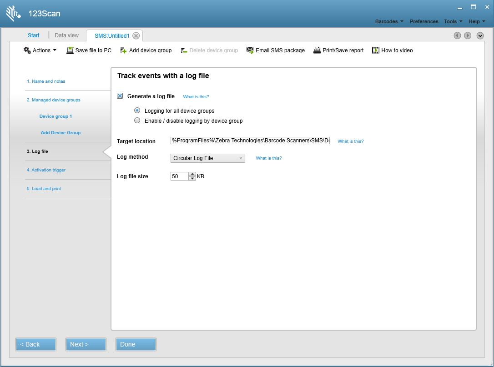Figure 10: Track events with a log file WindowFollowing table lists the fields available in this window, and their descriptions.
Table 1: Track events with a log file Window Fields
Sample Log File
SMS log message format is as follows <log-time-stamp> <device-group-and-name> :: <log-message- information>::<configuration-or-firmware-file-name>: <unique-identifier-for-scanner> :<scanner-model> : <scanner-serial-number> : < DOM> :< firmware-version> :< program-date>
Following table lists the log file fields, and their descriptions.
Table 2: Log File Fields
Field Description Log-time-stamp Date and time of the log message in the format: yyyy-mm-dd, hh:mm:ss. device-group-and-name Device group and the name of the device by which this scanner is managed. log-message- information Details of the action that the corresponding device executed on this scanner. configuration-or-firmware-file-name File name and the path of firmware or configuration file below %program files%/Download. unique-identifier-for-scanner Unique identifier assigned by SMS for each scanner managed by the SMS service or application. scanner-model Model of the scanner. scanner-serial-number Serial number of the scanner. DOM Date of manufacture of the scanner in the format: ddmmyy. If the scanner does not have this information, SMS writes "DDMMYY" to the log file. firmware-version Version of the current firmware in the scanner. program-date Date on which the scanner's last electronically programmed date in the format: ddmmyy. If the scanner does not have this information, SMS writes "DDMMYY" to the log file.
When the SMS agent begins execution of a package, either from cold-start or auto-reboot, an appropriate log file entry is made (if logging is enabled) explaining the last loaded package details as follows:
[2012-07-27, 14:17:37] INFO: A Valid Package 'SMS Package_ScannerUpgrade_OnAttach_DS6878_Presentation.smspkg' has been dropped into the DOWNLOAD folder. SMS will be re-started when current device execution completes [2012-07-27, 14:17:40] INFO: SMS Device Engine Requested a Service Restart [2012-07-27, 14:17:43] INFO: SMS Service is Stopping... [2012-07-27, 14:17:48] INFO: SMS has Started Executing as a Service From Download Folder. Package Details: 'SMS Package_ScannerUpgrade_OnAttach_DS6878_Presentation_modified.smspkg'The following is part of the log file content while SMS loaded the configuration on a DS6878 scanner with a standard cradle connected to host PC:
[2012-06-27, 12:48:49] Device Group 1_on_scanner_attached :: Initializing configuration file push :: config_files\Config_File_DS6878_UC_A2_MOD_2012.05.17.scncfg : 1 : STB4278-C0001WW : MXA0BP47 : 15Dec06 : NBCACAAM : DDMMMYY [2012-06-27, 12:48:54] Device Group 1_on_scanner_attached :: Configuration file push failed :: config_files\Config_File_DS6878_UC_A2_MOD_2012.05.17.scncfg : 1 : STB4278-C0001WW : MXA0BP47 : 15Dec06 : NBCACAAM : DDMMYY [2012-06-27, 12:49:32] Device Group 1_on_scanner_attached :: Initializing configuration file push :: config_files\Config_File_DS6878_UC_A2_MOD_2012.05.17.scncfg : 2 : DS6878-SR20007WR : M1M87R37J : 07OCT10 : PAAAJS00-003-R01 : DDMMYY [2012-06-27, 12:49:50] Device Group 1_on_scanner_attached :: Configuration file push succeeded :: config_files\Config_File_DS6878_UC_A2_MOD_2012.05.17.scncfg : 2 : DS6878-SR20007WR : M1M87R37J : 07OCT10 : PAAAJS00-003-R01 : DDMMYYThe following log entries were created while SMS loaded firmware and the configuration on a DS6878 scanner with a presentation cradle when SMS was started as a service:
[2012-06-22, 21:15:29] INFO: SMS has Started Executing as a Service From Work Folder. Package Details: 'SMS Package_DS6878_SR_StandardCradle_ScannerUpgrade_2012.06.22.smspkg' [2012-06-22, 21:15:54] Device Group 1_on_service_start :: Initializing firmware update :: plug-in_files\DS6878-STANDARD_SR_MODELS-S-014.SCNPLG : 2 : CR0078-SC10007WR : 1020800512980 : 28JUL10 : NBCACAAM : DDMMYY [2012-06-22, 21:16:24] Device Group 1_on_service_start :: Firmware update succeeded :: plug-in_files\DS6878-STANDARD_SR_MODELS-S-014.SCNPLG : 2 : : : : : [2012-06-22, 21:16:41] Device Group 1_on_service_start :: Initializing configuration file push :: config_files\Config_File_DS6878_BeeperHigh_2012.06.22.scncfg : 2 : CR0078-SC10007WR : 1020800512980 : 28JUL10 : NBCACAAM : DDMMYY [2012-06-22, 21:16:47] Device Group 1_on_service_start :: Configuration file push succeeded :: config_files\Config_File_DS6878_BeeperHigh_2012.06.22.scncfg : 2 : CR0078-SC10007WR : 1020800512980 : 28JUL10 : NBCACAAM : DDMMYY [2012-06-22, 21:17:05] Device Group 1_on_service_start :: Initializing configuration file push :: config_files\Config_File_DS6878_BeeperHigh_2012.06.22.scncfg : 3 : DS6878-SR20007WR : M1M87R37F : 08OCT10 : PAAAJS00-004-R01 : DDMMYY [2012-06-22, 21:17:22] Device Group 1_on_service_start :: Configuration file push succeeded :: config_files\Config_File_DS6878_BeeperHigh_2012.06.22.scncfg : 3 : DS6878-SR20007WR : M1M87R37F : 08OCT10 : PAAAJS00-004-R01 : DDMMMY -
In Activation trigger window, you may select the operation mode of the SMS agent, and which events trigger the SMS Package to be loaded to a scanner.
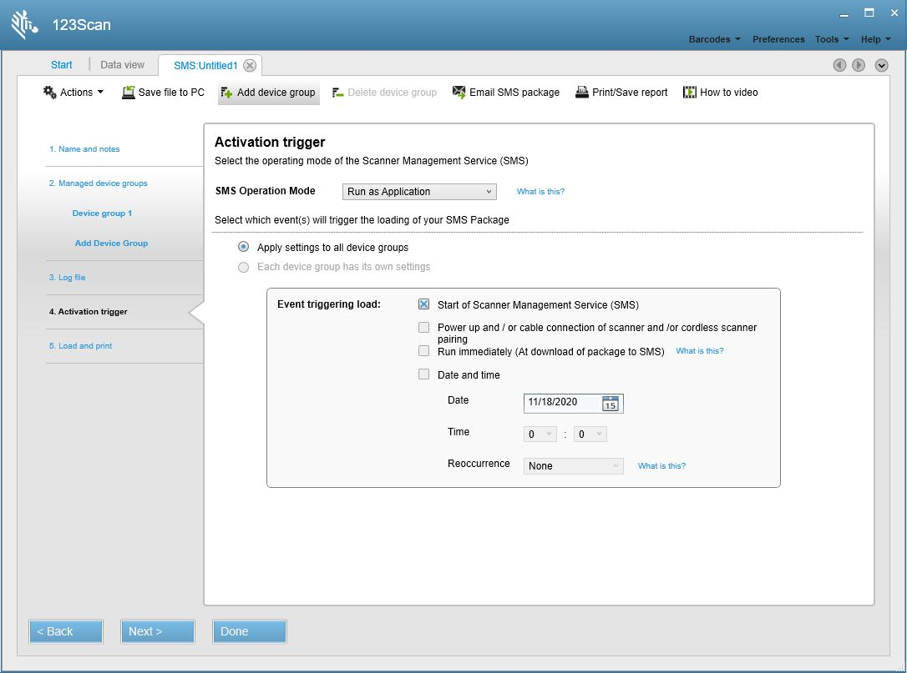Figure 11: Activation trigger WindowFollowing table lists the fields available in this window, and their descriptions.
Table 3: Activation trigger Window Fields
Field Description SMS Operation Mode The SMS operation mode setting determines if the SMS operates as a service, or an application. Use the drop-down arrow to make a selection.
- Run as Service: The SMS runs continuously as a Windows background service. It monitors scanners and the download folder on the target PC for any activity that triggers a package load. In this mode, the SMS agent automates the process of loading an SMS Package to your scanner. Once the SMS Package is on the target PC in the download folder, the SMS agent reviews the SMS Package content and automatically programs the scanner appropriately. Using your SMS Package, the SMS agent programs your scanner without any console/application initiating command. Asset information can be accessed real time using Windows Management Instrumentation (WMI).
-
Run as Application: The SMS is only available and running when it is manually launched. The SMS agent can be launched by a third party application, or console initiated command. When invoked, the SMS agent checks the download folder on the target PC for the existence of a new SMS Package, and processes that package. Typically, a customer uses their third party network management tool first to copy an SMS Package into the target PC download folder and then invokes the SMS agent to process that package. Upon completion of the task(s) outlined in the SMS Package, the SMS agent terminates operation and releases the USB scanner device. Asset information can be accessed non-real time from the log file (which must be enabled in the SMS Package), and compiled through parsing. In Application mode, the SMS agent can be used in conjunction with but not simultaneously with a third party application, or driver (such as a non-Zebra OPOS scanner driver). To configure SMS to initially run in Application mode, first download an SMS Package with its SMS operation mode set to Run as an Application (programmable in the 123Scan Activation trigger Window on page 4-10). Then, launch the SMS agent using the script, Start SMS Agent.vbs (located in <%ProgramFiles%>\Zebra Technologies\Barcode Scanners\SMS). Alternatively, from a command line, type net start "Zebra SMS".
Note 1: If you select Run as Application, certain trigger events start of SMS, initial download of SMS Package, and date and time) are not available for selection.
Note 2: To switch the SMS agent to operate in Application mode, load an SMS Package with SMS Operation Mode set to Run as an Application.
Note 3: Be aware that when SMS is running in Service mode, an unexpected plug and play event such as a cable reconnection may trigger SMS processing. In this instance, SMS will temporarily gain control of the scanner to perform any specified SMS package directives and interrupt normal scanner operation until SMS has finished executing. If this scenario is a concern, set SMS to 'Run as Application' and launch SMS manually when an interruption will not impact normal scanner usage.
Apply settings to all device groups This trigger event to load your SMS Package applies trigger events to all managed devices in your SMS Package. Each device group has its own settings This trigger event to load your SMS Package applies different trigger events to different managed devices in your SMS Package. Start of Scanner Management Service (SMS) Triggers package loading when the SMS agent starts. This trigger includes the following scenarios:
- When the SMS agent is executed, and Run as an Application is set.
- When the SMS is set to run as a service, and the host PC is rebooted.
- When the SMS is set to run as a service, and the SMS service is restarted.
Power up and/or cable connection of scanner Triggers package loading when a scanner becomes attached to the host PC, or the PC is rebooted. Run immediately (at download of package to SMS) Triggers package loading immediately upon arrival and detection of an SMS Package in the download folder. If this trigger is not selected, package loading takes place at the next host PC reboot or restart of the SMS service. This trigger applies only to Run as service. Date and time Triggers a package load at the specified date and time, and time interval. This trigger applies only to Run as Service mode.
Select Reoccurrence to set up a reoccurring event to load an SMS Package. For example, to reload the same SMS Package every two weeks, set this field to Every 2 weeks. In this example, the SMS Package loads on the same day of the week and time specified in the Date and Time trigger event boxes. The SMS Package continues to reload every two weeks. This trigger applies only to Run as Service mode.
Following table shows the differences between the SMS operation modes.
Table 4: SMS Operation Modes: Service vs Application
Run as Service Run as Application SMS Functionality Parameter Configuration Supported Supported Firmware Update Supported Supported Asset Tracking Supported Non-real time support SMS Operation SMS always running and accessible Supported Not Supported SMS launched by a command from a third party console or application Not Supported Supported Upon completion of tasks define in the SMS Package, the SMS terminates operation and releases the USB scanner Not Supported Supported
-
Click Next to display the Load and print window. In this window choose one of the SMS Package output options (see Table 5).
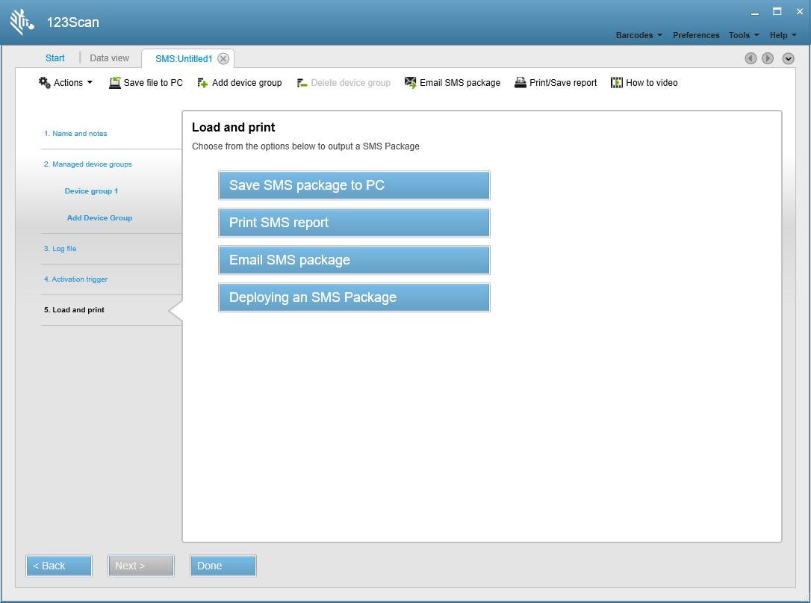Figure 12: Load and Print WindowTable 5: Load and Print Window Options
Option Description Save SMS package to PC Prompts with a window to select a location to save the completed SMS Package. Print SMS report Opens a window with the option to print the SMS report, or save it to a Word document. Email SMS package Opens an e-mail window with the SMS Package attached. Deploying an SMS Package Opens a window with instructions on deploying an SMS Package on a production host PC.
Opening an Existing SMS Package
You can open an existing SMS Package from a Windows folder, or within the 123Scan utility.
Opening an SMS Package from a Windows Folder
- Locate the SMS Package on the PC. The folder path for an SMS Package within 123Scan folder structure is C:\ProgramData\Documents\123Scan\SMS Packages.
- Double-click the package.
-
The 123Scan utility launches and the SMS package summary window displays.
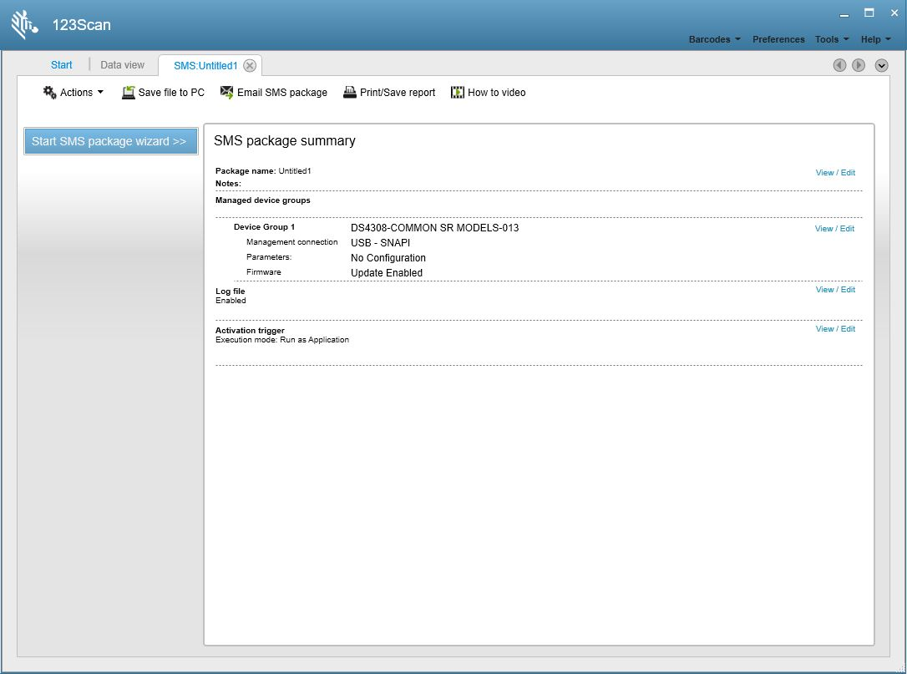Figure 13: SMS package summary Window - Click Start SMS package wizard to modify the package content.
Opening an SMS Package within 123Scan
- Launch the 123Scan utility.
-
On the Start tab, click the Actions drop-down menu and select Open Scanner Management Service (SMS) Package. Select the SMS Package from the file dialog or Select an existing package from the recent files list. Click the Recent files arrow to expand the list of the recently accessed files.
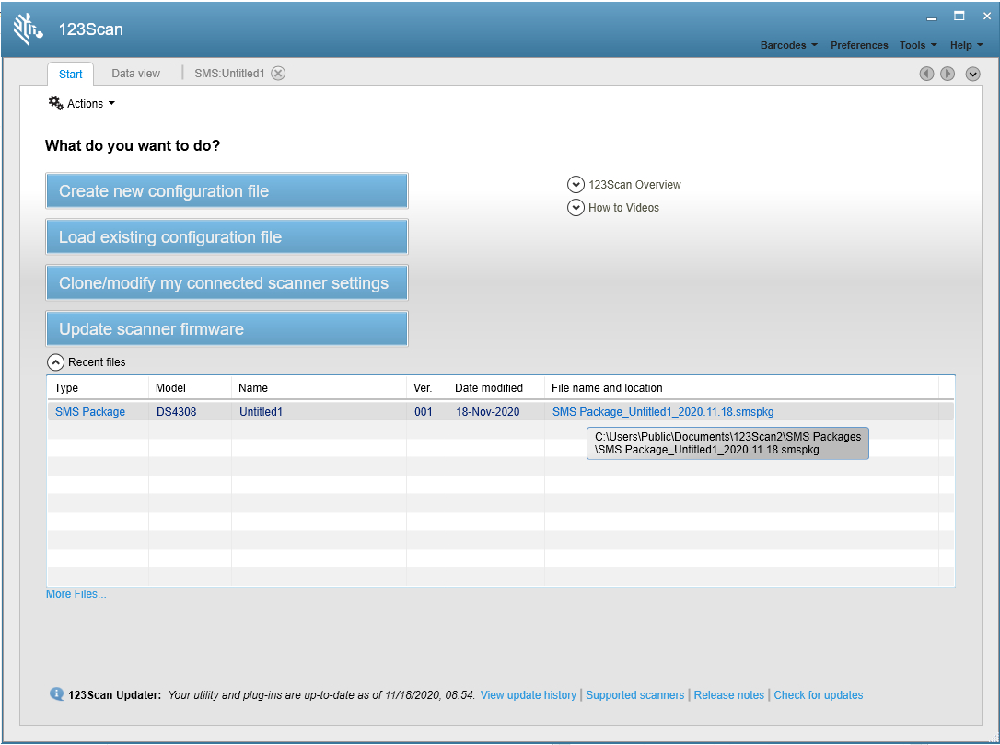Figure 14: Open SMS package Window